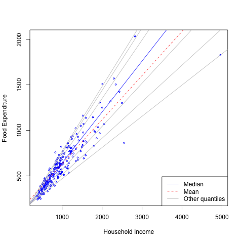

- Introduction and Review (8-9 / 49)
- Bayesian Quantile Regression Using Polya Trees Priors (8/49)
- Quantile Regression in the Presence of Monotone Missingness with Sensitivity Analysis (19/49)
- Future Work (9/49)
- References
Quantile Regression
Ph. D. Dissertation Proposal
Minzhao Liu
Supervisor: Dr. Mike Daniels. Department of Statistics, University of Florida
Outline
Why Quantile Regression

Scatterplot, Quantile Regression Fit and Linear Regression Fit of the Engel Food Expenditure Data:
- Scatterplot of the Engel data on food expenditure vs household income for a sample of 235 19th century working class Belgian households.
- Fitted quantile lines for quantile (0.05; 0.1; 0.25; 0.75; 0.9; 0.95).
- Fitted median regression line
- Dashed red line is the fitted value from linear regression model estimates.
Introduction of Quantile Regression
Quantile
\[ Q_{Y}(\tau) = \inf \{y: F(y) \geq \tau \}, \]
Quantile Regression
\[ Q_{Y}(\tau|\mathbf x) = \mathbf x' \beta(\tau). \]
Quantile Regression vs Mean Regression
- More information about the relationship of covariates and responses
- Slope may varies for different quantiles
- May focus on certain quantiles as estimates of interest
- More complete description of the conditional distribution
Traditional Frequentist Methods
- R package
quantreg(Koenker, 2012) - Using simplex for linear programming problems mentioned in Koenker et al. (1978)
\[ \mathbf \beta(\tau) = \arg \min_b \sum_{i=1}^{n} \rho_{\tau}(y_{i} - \mathbf x_{i}' b) \]
Pros and Cons
- No distributional assumptions
- Fast using linear programming
- Asymptotic inference may not be accurate for small sample sizes
- Easy to generalize:
- Random effect
- \(L_1\) , \(L_2\) penalties
Bayesian Methods
- Walker & Mallick (1999): diffuse finite Polya Tree
- Yu & Moyeed (2001): asymmetric Laplace distribution
- Hanson & Johnson (2002): mixture of polya tree prior for median regression on survival time in AFT model
- Kottas & Krnjajic (2009): semi-parametric models using DP mixtures for the error distribution
- Reich et al. (2010): an infinite mixture of Gaussian densities for error
- Kozumi & Kobayashi (2011): developed a simple and efficient Gibbs sampling algorithm for fitting quantile regression based on a location-scale mixture representation of ALD
- Sanchez et al (2013) proposed efficient and easy EM algorithm to obtain MLE for ALD settings from the hierarchical representation of ALD
Common Issues
- Single quantile regression each time
- Densities have their restrictive mode at the quantile of interest, which is not appropriate when extreme quantiles are being investigated
- quantile lines monotonicity constraints and difficulty in making inference for quantile regression parameters for an interval
- Joint inference is poor in borrowing information through single quantile regressions
- Not coherent to pool from every individual quantile regression, because the sampling distribution of \(Y\) for \(\tau_1\) is usually different from that under quantile \(\tau_2\) since they are assuming different error distribution under two different quantile regressions (Tokdar & Kadane, 2011)
- Goal of Chapter 1 of the thesis
Chapter 1: Bayesian Quantile Regression Using Polya Trees Priors
- [ ] May insert a Polya Tree picture here
Intuition
Consider heterogeneous linear regression model from He et al (1998):
\[ y_i = \mathbf x_i \mathbf \beta + (\mathbf{x_i \gamma} )\epsilon_i \]
The \(\tau^{th}\) quantile regression parameters is
\[ \mathbf \beta(\tau) = \mathbf \beta + F^{-1}_\epsilon (\tau) \mathbf \gamma \]
- Homogeneous model (\(\mathbf \gamma = (1, \mathbf 0)\)): parallel quantile lines
- Heterogeneous model (\(\mathbf \gamma \neq (1, \mathbf 0)\)): non-parallel quantile lines
- Heterogeneous linear regression model allows non-parallel quantile lines
- [ ] Illustrate with 2 pictures
Idea
\[ y_i = \mathbf x_i \mathbf \beta + (\mathbf{x_i \gamma} )\epsilon_i \]
\[ \mathbf \beta(\tau) = \mathbf \beta + F^{-1}_\epsilon (\tau) \mathbf \gamma \]
- Estimate \(\mathbf \beta, \mathbf \gamma, F^{-1}_\epsilon(\tau) |\mathbf Y\), then \(\mathbf \beta(\tau) | \mathbf Y\)
- Use mixture of Polya Tree priors to nonparametrically estimate \(F^{-1}_\epsilon(\tau) |\mathbf Y\)
- Closed form for predictive quantile regression parameters
- Polya tree is a very flexile way to model the unknown distribution
- Exact inference through MCMC and fewer assumptions
Polya Tree Definition
- Polya Tree priors were introduced decades ago (Freedman 1963, Fabius 1964, Ferguson 1974)
- Lavine (1992, 1994) extended to Polya Tree models, completed definitions, and introduced how to sample from Polya Trees
- Advantage over Dirichlet process:
- can be absolutely continuous with probability 1
- can be easily tractable
- Dirichlet process is just a special case of Polya Tree
Basic
Denote
- \(E=\{0,1\}\)
- \(E^m\) as the m-fold product of \(E\)
- \(E^0 = \emptyset\)
- \(E^* = \cup_0^\infty E^m\)
- \(\Omega\) be a separable measurable space
- \(\Pi_0 = \Omega\)
- \(\Pi=\{\Pi_m: m=0,1,...\}\) be a separating binary tree of partitions of \(\Omega\)
- \(B_{\emptyset} = \Omega\)
- \(\forall \epsilon=\epsilon_1\cdots \epsilon_m \in E^{*}\), \(B_{\epsilon 0}\) and \(B_{\epsilon 1}\) are the two partition of \(B_{\epsilon}\).
Definition (continue)
Polya Tree:
A random probability measure $G$ on $(\Omega, \mathcal{F})$ is said to have a Polya tree distribution, or a Polya tree prior with parameter $(\Pi, \mathcal{A})$, written as $G|\Pi, \mathcal{A} \sim PT (\Pi, \mathcal{A})$, if there exists nonnegative number $\mathcal{A} = \left\{ \alpha_\epsilon, \epsilon \in E^* \right \}$ and random vectors $\mathcal{Y} = \{ Y_\epsilon : \epsilon \in E^* \}$ such that the following hold:
- all the random variables in \(\mathcal{Y}\) are independent;
- \(Y_{\epsilon}= (Y_{\epsilon 0}, Y_{\epsilon 1}) \sim \mathrm{Dirichlet}(\alpha_{\epsilon 0 }, \alpha_{\epsilon 1}), \forall \epsilon \in E^{*}\);
- \(\forall m=1,2, \ldots\), and \(\forall \epsilon \in E^{*}, G(B_{\epsilon_{1}, \ldots, \epsilon_m}) = \prod_{j=1}^m Y_{\epsilon_1 \cdots \epsilon_j}\).
Polya Tree Parameters (\(\mathcal{A}\))
Usually a Polya tree is centered around a pre-specified distribution \(G_0\), which is called the baseline measure.
\(\mathcal{A}\) determines how much \(G\) can deviate from \(G_0\).
- Ferguson (1974) pointed out \(\alpha_{\epsilon} = 1\) yields a \(G\) that is absolutely continuous with probability 1
- \(\alpha_{\epsilon_1, \ldots, \epsilon_m} = m^2\) yields \(G\) that is absolutely continuous with probability 1.
- Walker and Mallick (1999) and Paddock (1999) considered \(\alpha_{\epsilon_1, \ldots, \epsilon_m} = cm^2\), where \(c > 0\).
- Berger and Guglielmi (2001) considered \(\alpha_{\epsilon_1, \ldots, \epsilon_m} = c \rho(m)\). In general, any $\rho(m) $ such that \(\sum_{m=1}^{\infty} \rho(m)^{-1} < \infty\) guarantees \(G\) to be absolutely continuous.
- In our case, we adopt \(\alpha_{\epsilon_1, \ldots, \epsilon_m} = cm^2\).
- \(m\) is the number of levels
Polya Tree Parameters (\(\Pi\))
Partition parameter \(\Pi\)
Pre-specified distribution \(G_0\), baseline measure
Canonical way of constructing a Polya Tree distribution \(G\) centering on \(G_0\)
\(B_0 = G^{-1}_0 ([0, 1/2]), B_1 = G^{-1}_0 ((1/2,1])\)
\(G(B_0) = G(B_1)= 1/2\)
\(\forall \epsilon \in E^{*}\), choose \(B_{\epsilon 0 }\) and \(B_{\epsilon 1}\) to satisfy \(G(B_{\epsilon 0 } |B_{\epsilon} ) = G(B_{\epsilon 1} | B_{\epsilon}) = 1/2\)
A simple example is to choose \(B_{\epsilon 0}\) and \(B_{\epsilon 1}\) in level \(m\) by setting them as \(G^{-1}_0 \left((k/2^m, (k+1)/2^m] \right)\), for \(k=0,..., 2^m-1\).
(May show picture here)
Properties of Polya Tree
Expectation of Polya Tree
Suppose \(G \sim PT(\Pi, \mathcal{A})\) is a random probability measure and \(Y_1, Y_2, ...\) are random samples from \(G\).
\(F= E(G)\) as a probability measure is defined by \(F(B) = E(G(B)),\forall B \in \mathcal{B}\). By the definition of Polya tree, for any \(\epsilon \in E^{*}\), \[ F(B_{\epsilon}) = E(G(B_{\epsilon})) = \prod_{j=1}^m \frac{\alpha_{\epsilon_1, \ldots, \epsilon_j}}{\alpha_{\epsilon_1, \ldots, \epsilon_{j-1},0} + \alpha_{\epsilon_1, \ldots, \epsilon_{j-1},1}}. \]
If \(G\) is constructed based on baseline measure \(G_0\) and we set \(\alpha_{\epsilon_1, ..., \epsilon_m} = cm^2\), \(\alpha_{\epsilon_0 }= \alpha_{\epsilon_1}\), then \(\forall B \in \mathcal{B}, F(B) = G_0(B)\); thus, \(F=G_0\), if there is no data.
Density Function
Suppose \(F=E(G), G|\Pi, \mathcal{A} \sim PT (\Pi, \mathcal{A})\), where $G_0 $ is the baseline measure. Then, using the canonical construction, \(F=G_0\), the density function is
\[ f(y) = \left[ \prod_{j=1}^m \frac{ \alpha_{\epsilon_1, \ldots, \epsilon_j}(y)}{\alpha_{\epsilon_1, \ldots, \epsilon_{j-1},0}(y) +\alpha_{\epsilon_1, \ldots, \epsilon_{j-1},1}(y)} \right] 2^{m } g_0(y) \] where \(g_0\) is the pdf of \(G_0\).
When using the canonical construction with no data, \(\alpha_{\epsilon_0 } = \alpha_{\epsilon_1}\), above equation simplifies to
\[ f(y) = g_0(y). \]
Conjugacy
If \(y_1, ..., y_n | G \sim G, G|\Pi,\mathcal{A} \sim PT(\Pi, \mathcal{A})\), then \(G|y_1, ..., y_n, \Pi, \mathcal{A} \sim PT(\Pi, \mathcal{A}^{*})\), where in \(\mathcal{A}^{*}, \forall \epsilon \in E^{*}\),
\[ \alpha_{\epsilon}^{*} = \alpha_{\epsilon} + n_{\epsilon}(y_1, \ldots, y_n), \] where \(n_{\epsilon}(y_1, ..., y_n)\) indicates the count of how many samples of \(y_1, ..., y_n\) fall in \(B_{\epsilon}\).
Mixture of Polya Trees
- The behavior of a single Polya tree highly depends on how the partition is specified.
- A random probability measure \(G_\theta\) is said to be a mixture of Polya tree if there exists a random variable \(\theta\) with distribution \(h_{\theta}\), and Polya tree parameters \((\Pi^{\theta}, \mathcal{A}^{\theta})\) such that
\[ G_{\theta} | \theta=\theta \sim PT (\Pi^{\theta}, \mathcal{A}^{\theta}) \]
Example: Suppose $G_0 = \mathrm{N}(\mu, \sigma^2)$ is the baseline measure. For $\epsilon \in E^{*}, \alpha_{\epsilon_m} = cm^2 $, $\mathbf \theta = (\mu, \sigma, c)$ is the mixing index and the distribution on $\Theta = (\mu, \sigma, c) $ is the mixing distribution.
- With the mixture of Polya tree, the influence of the partition is lessened
- Inference will not be affected greatly by a single Polya tree distribution.
Predictive Error Density (1)
- Suppose \(G_{\theta}\) is the baseline measure, \(g_0(y)\) is the density function.
- \(\Pi^{\theta}\) is defined as \[ B^{\theta}_{\epsilon_1, \ldots, \epsilon_m} = \left( G^{-1}_{\theta} \left( \frac{k}{2^m} \right), G^{-1}_{\theta}\left( \frac{k+1}{2^m} \right) \right), \] where \(k\) is the index of partition \(\epsilon_1, \ldots, \epsilon_m\) in level \(m\).
- \(\mathcal{A}^c\) is defined as \[ \alpha_{\epsilon_1, \ldots, \epsilon_m} = cm^2. \] Therefore, the error model is \[ \begin{aligned} y_1, \ldots, y_n |G_{\theta} & \sim G, \\ G|\Pi^{\theta}, \mathcal{A}^{c} & \sim PT (\Pi^{\theta}, \mathcal{A}^{c}). \end{aligned} \]
Predictive Error Density (2)
The predictive density function of \(Y|y_1, \ldots, y_n, \theta\), marginalizing out \(G\), is \[ f_Y^{\theta} (y|y_1, \ldots, y_n) = \lim_{m \to \infty} \left( \prod_{j=2}^m \frac{cj^2 + n_{\epsilon_1 \cdots \epsilon_j(x) }(y_1, \ldots, y_n)}{2cj^2 + n_{\epsilon_1 \cdots \epsilon_{j-1}(x)}(y_1, \ldots, y_n)} \right)2^{m-1} g_0(y), \] where \(n_{\epsilon_1 \cdots \epsilon_j(x) }(y_1, \ldots, y_n)\) denotes the number of observations \(y_1, \ldots, y_n\) dropping in the bin \(\epsilon_1 \cdots \epsilon_j\) where \(y\) stays in the level \(j\).
- If we restrict the first level weight as \(\alpha_0=\alpha_1=1\), then we only need to update levels beyond the first level.
Finite Polya Tree
In practice, a finite \(M\) level Polya Tree is usually adopted to approximate the full Polya tree, in which, only up to \(M\) levels are updated.
The corresponding predictive density becomes \[ f_Y^{\theta, M} (y|y_1, \ldots, y_n) = \left( \prod_{j=2}^M \frac{cj^2 + n_{\epsilon_1 \cdots \epsilon_j(x) }(y_1, \ldots, y_n)}{2cj^2 + n_{\epsilon_1 \cdots \epsilon_{j-1}(x)}(y_1, \ldots, y_n)} \right)2^{M-1} g_0(y). \]
The rule of thumb for choosing \(M\) is to set \(M=\log_2n\), where \(n\) is the sample size (Hanson et al 2002)
Hanson & Johnson (2002) showed the approximation is exact for \(M\) large enough.
Predictive Cumulative Density Function
Based on the predictive density function of a finite Polya tree distribution, the predictive cumulative density function is \[ F^{\theta,M}_Y(y|y_1, \ldots, y_n) = \sum_{i=1}^{N-1} P_{i} + P_N \left( G_{\theta}(y)2^M -(N-1) \right), \] where \[ \begin{aligned} P_i &= \frac{1}{2} \left(\prod_{j=2}^M \frac{cj^2 + n_{j,\lceil i2^{j-M} \rceil}(y_1, \ldots, y_n)}{2cj^2 + n_{j-1,\lceil i2^{j-1-M} \rceil}(y_{1 },\ldots, y_n)} \right) \mbox{ and}\\ N & = \left[ 2^{M } G_{\theta}(y) +1\right], \end{aligned} \] in which \(n_{j,\lceil i2^{j-M} \rceil}(y_1, \ldots, y_n)\) denotes the number of observations \(y_1, \ldots, y_n\) in the \(\lceil i2^{j-M} \rceil\) slot at level \(j\), \(\lceil \cdot \rceil\) is the ceiling function, and \([ \cdot ]\) is the floor function.
Predictive Error Quantiles
The posterior predictive quantile of finite Polya tree distribution is \[ Q^{\theta, M}_{Y|y_1, \ldots, y_n}(\tau) = G^{-1}_{\theta} \left( \frac{\tau- \sum_{i=1}^N P_i + N P_N}{2^M P_N} \right), \] where \(N\) satisfies \(\sum_{i=1}^{N-1} P_i < \tau \le \sum_{i=1}^N P_i\).
The explicit form for quantile regression coefficients becomes: \[ \mathbf{\beta}(\tau) = \mathbf{\beta} + \mathbf{\gamma}G_{\theta}^{-1} \left(\frac{\tau - \sum_{i=1}^NP_i + NP_N}{2^MP_N} \right), \]
Greatly facilitate computations
Method
Fully Bayesian Quantile Regression Specification with Mixture of Polya Tree Priors
The full Bayesian specification of quantile regression is given as follows, \[ \begin{align*} y_i& = \mathbf{x_i'\beta} + (\mathbf{x_i'\gamma}) \epsilon_{i}, i = 1, \ldots, n \\ \epsilon_i |G_{\theta} & \sim G_{\theta} \\ G_{\theta}|\Pi^{\theta}, \mathcal{A}^{\theta} & \sim PT (\Pi^{\theta}, \mathcal{A}^{\theta}) \\ \mathbf{\theta} = (\sigma, c) & \sim \pi_{\mathbf \theta}(\mathbf \theta) \\ \mathbf{\beta} & \sim \pi_{\mathbf \beta}(\mathbf \beta)\\ \mathbf{\gamma} &\sim \pi_{\mathbf \gamma}(\mathbf \gamma). \end{align*} \] In order to not confound the location parameter, $\epsilon_i $ or \(G\) is set to have median 0 by fixing \(\alpha_0=\alpha_1 = 1\). For the similar reason, the first component of \(\mathbf{\gamma}\) is fixed at 1.
Posterior Distribution of (\(\mathbf{\beta}, \mathbf \gamma, \sigma, c\))
\[ \begin{aligned} P(\mathbf{\beta}, \mathbf{\gamma}, \sigma, c|\mathbf{Y}) & \propto L(\mathbf{Y}| \mathbf{\beta}, \mathbf{\gamma}, \sigma, c) \pi_{\beta}(\beta) \pi_{\gamma}(\gamma) \pi_{\sigma}(\sigma) \pi_c(c) \\ & = \frac{1}{\prod_{i=1}^n (\mathbf{x_i'\gamma})} P \left( \epsilon_1, \ldots, \epsilon_n | \mathbf{\beta}, \mathbf{\gamma}, \sigma, c\right) \pi_{\beta}(\beta) \pi_{\gamma}(\gamma) \pi_{\sigma}(\sigma) \pi_c(c) \\ & = \frac{1}{\prod_{i=1}^n (\mathbf{x_i'\gamma})} P \left(\epsilon_n| \epsilon_1, \ldots, \epsilon_{n-1}, \mathbf{\beta}, \mathbf{\gamma}, \sigma, c\right) \cdots P \left(\epsilon_2| \epsilon_1, \mathbf{\beta}, \mathbf{\gamma}, \sigma, c\right) P \left(\epsilon_1| \mathbf{\beta}, \mathbf{\gamma}, \sigma, c\right)\\ & \qquad \pi_{\mathbf{\beta}}(\mathbf{\beta}) \pi_{\mathbf{\gamma}}(\mathbf{\gamma}) \pi_{\sigma}(\sigma) \pi_c(c), \end{aligned} \] where \(\epsilon_i = (y_i - \mathbf{x_i'\beta})/(\mathbf{x_i'\gamma})\)
Priors
\((\sigma, c)\)
Diffuse gamma prior: \[ \begin{align*} \pi(\sigma) & \sim \Gamma (1/2, 1/2), \\ \pi(c) & \sim \Gamma(1/2, 1/2). \end{align*} \]
\((\mathbf \beta, \mathbf \gamma)\)
\[ \begin{align*} \pi_{\mathbf \beta} (\beta_j) &= \delta_{\beta_j} \phi(\beta_j; 0, s_j^2 \sigma_{\beta_j}^2) + (1- \delta_{\beta_j}) \phi(\beta_j; \beta_j^p, \sigma_{\beta_j}^2),\\ \delta_{\beta_j} & \sim \mbox{Bernoulli} (\pi_{\beta_j}), \end{align*} \]
Spike and Slab Priors
- Shrink toward zero
- Do variable selection on both quantile regression parameters and heterogeneity parameters
- Improve efficiency
- Use continuous spike and slab priors on each component of \((\mathbf \beta, \mathbf \gamma)\) (George & McCulloch, 1993)
Spike and Slab Priors (Continued)
The density function of priors for \(\beta_j\) can be written as: \[ \begin{aligned} \pi_{\mathbf \beta} (\beta_j) &= \delta_{\beta_j} \phi(\beta_j; 0, s_j^2\sigma_{\beta_j}^2) + (1- \delta_{\beta_j}) \phi(\beta_j; \beta_j^p, \sigma_{\beta_j}^2),\\ \delta_{\beta_j} & \sim \mbox{Bernoulli} (\pi_{\beta_j}), \end{aligned} \]
- \(\phi(x; \mu, \sigma^2)\) is the density function of normal distribution at \(x\) with mean \(\mu\) and variance \(\sigma^2\).
- \(\beta_j^p, \sigma_{\beta_j}^2\) are the mean and variance of the diffuse normal prior for the slab component.
- \(\delta_{\beta_j}\) is the indicator that \(\beta_j\) comes from spike component or from slab component and \(\pi_{\beta_j}\) is its corresponding probability.
- \(s_j (>0)\) is small enough
- \(\delta_{\beta_j} = 1\), it indicates \(|\beta_j | < 3 s_j\sigma_{\beta_j}\) with high probability, thus it can be approximately estimated as 0 and regarded as non-significant and removed from the model
- \(\delta_{\beta_j} =0\), it indicates \(\beta_j\) comes from the slab component, thus \(\beta_j\) is believed to come from a diffuse prior distribution
Choice of Diffuse Priors
\[ \begin{aligned} \pi_{\mathbf \beta} (\beta_j) &= \delta_{\beta_j} \phi(\beta_j; 0, s_j^2\sigma_{\beta_j}^2) + (1- \delta_{\beta_j}) \phi(\beta_j; \beta_j^p, \sigma_{\beta_j}^2),\\ \delta_{\beta_j} & \sim \mbox{Bernoulli} (\pi_{\beta_j}), \end{aligned} \]
- We choose \(\mathbf \beta^p\), the mean of normal distribution of slab component, to be least square estimates of \(\mathbf Y\) given covariates matrix \(\mathbf X\), i.e., \(\mathbf{(X^TX)^{-1}X^TY}\).
Let \(\sigma_{\beta_j}^2\) be the diagonal component of matrix \(\hat{\sigma}^2 \mathbf{(X^TX)^{-1}}\), where \(\hat{\sigma}^2 = \sum_i^n (y_i - \mathbf{x_i\beta}^p)^2/(n - p)\).
The priors for \(\mathbf \gamma\) are similar to priors for \(\mathbf \beta\).
\(\mathbf \gamma^p = \mathbf 0\)
\(\mathbf \sigma_{\gamma} = \mathbf 100\)
To shrink heterogeneity parameters toward 0
Choice of \(\pi_\beta\), \(\pi_\gamma\)
\[ \begin{aligned} \pi_{\mathbf \beta} (\beta_j) &= \delta_{\beta_j} \phi(\beta_j; 0, s_j^2\sigma_{\beta_j}^2) + (1- \delta_{\beta_j}) \phi(\beta_j; \beta_j^p, \sigma_{\beta_j}^2),\\ \delta_{\beta_j} & \sim \mbox{Bernoulli} (\pi_{\beta_j}), \end{aligned} \]
- The \(\pi_{\beta_j}\) and \(\pi_{\gamma_j}\) control the belief that the corresponding regressors are needed in the model.
- Large \(\pi\) reflects doubt that regressors should be included, and vice versa.
- Furthermore, we can put hyper priors on \(\pi_{\beta_j}\) and \(\pi_{\gamma_j}\) to get rid of uncertainty about distribution of the components.
- For example, in this article, we assign priors for \(\pi_{\beta_j}\) and \(\pi_{\gamma_j}\) to be a beta distribution with parameters \((1,1)\).
Computation Details
- Using an MCMC algorithm implemented in our R package bqrpt
- Draw posterior samples of (\(\mathbf \beta, \mathbf \gamma, \sigma, c | \mathbf Y\))
- Adaptive Metropolis-Hasting algorithm
- Thinning
Metropolis-Hasting Algorithm
- Candidate distribution
- \(\beta_j^{*} \sim N(\beta_j^{l-1}, t_{\beta_j} (\mathbf{X'X})^{-1}_{jj})\)
- \(\gamma_j^* \sim N(\gamma_j^{l-1}, t_{\gamma_j}(\mathbf{X'X})^{-1}_{jj})\)
- \(\sigma^* \sim LogNormal(\log \sigma^{l-1}, t_{\sigma})\)
- \(c^* \sim LogNormal(\log c^{l-1}, t_c)\)
- Adaptive Metropolis-Hasting algorithm
- \(t_{\beta_j}, t_{\gamma_j}, t_{\sigma}, t_c\) are the tuning parameters to adjust acceptance rate (Jara et al. 2009)
- For good MCMC mixing performance, we adjust the acceptance rate of the adaptive Metropolis-Hasting algorithm to around 0.2 for sampling
- Tuning parameters are increased(decreased) by multiplying(dividing) \(\delta(l) = \exp(\min(0.01, l^{-1/2}))\) when current acceptance proportion is larger(smaller) than target optimal acceptance rate for every 100 iterations during burn-in period, where \(l\) is the number of current batches of 100 iterations
Thinning
- When the actual error distribution is far away from the Polya tree baseline measure, the MCMC trace plot may reflect strong autocorrelation among posterior samples. Thus we recommend thinning to reduce the autocorrelation.
Simulation
- RQ: rq function in (Koenker, 2012) (frequentist quantile regression method)
- FBQR: flexible Bayesian quantile regression (Reich et al. 2010)
- PT: Polya trees with normal diffuse priors
- PTSS: Polya trees with spike and slab priors
- Compare for both homogeneous and heterogeneous models
Design
- [M1:] \(y_i = 1 + x_{i1}\beta_1 + \epsilon_{1i}\), \(\epsilon_{1i} \sim N(0, 1)\)
- [M2:] \(y_i = 1 + x_{i1}\beta_1 + \epsilon_{2i}\), \(\epsilon_{1i} \sim t_3()\)
- [M3:] \(y_i = 1 + x_{i1}\beta_1 + \epsilon_{3i}\), \(\epsilon_{1i} \sim 0.5 N(-2,1) + 0.5N(2,1)\)
- [M4:] \(y_i = 1 + x_{i1}\beta_1 + \epsilon_{4i}\), \(\epsilon_{1i} \sim 0.8 N(0,1) + 0.2N(3,3)\)
- [M1H:] \(y_i = 1 + x_{i1}\beta_1 + (1 + 0.2x_{i1}) \epsilon_{1i}\),
- [M2H:] \(y_i = 1 + x_{i1}\beta_1 + (1 + 0.2x_{i1}) \epsilon_{2i}\),
- [M3H:] \(y_i = 1 + x_{i1}\beta_1 + (1 + 0.2x_{i1}) \epsilon_{3i}\),
- [M4H:] \(y_i = 1 + x_{i1}\beta_1 + (1 + 0.2x_{i1}) \epsilon_{4i}\),
- [M5:] \(y_{i} | R_i = 1 \sim 2 + x_{i1} + \epsilon_{1i}, y_{i}| R_i = 0 \sim -2 - x_{i1} + \epsilon_{1i}\), \(\epsilon_{1i} \sim N(0, 1)\)
- \(x_{i1} \sim \mathrm{Uniform}(0,4)\)
- \(\beta_1 = 1\)
- \(n = 200\)
- 100 data sets
Explain
- (explain these models) In model 1 (M1), the error distribution coincides with baseline distribution. Model 2 (M2) has a heavier tail distribution, student-t distribution with 3 degrees of freedom. Model 3 (M3) has a bimodal distribution for the error term. Model 4 (M4) uses a skewed mixture of normal distribution error introduced in Reich et al. (2010). Model 1H-4H (M1H-M4H) assume heterogeneous variances such that the quantiles lines are no long parallel to each other. Model 5 (M5) also assumes heterogeneous variance, but the heterogeneity comes from the mixture of distributions instead of heterogeneous variance from covariates.
PT Priors
\[ \begin{align*} \pi(\beta_j) & \sim N(\mathbf \beta_j^p, \mathbf V_{jj}) , j = 0, 1,\\ \pi(\gamma_j) & \sim N(0, 100), j = 1,\\ \pi(\sigma) & \sim \Gamma (a/2, b/2), \\ \pi(c) & \sim \Gamma(a/2, b/2), \end{align*} \]
- \(\mathbf \beta^p = \mathbf{(X'X)^{-1}X'Y}\) is the least square estimator
- \(\mathbf V = \hat{\sigma}^2\mathbf{(X'X)^{-1}}\)
- \(\hat{\sigma}^2 = \sum_{i = 1}^n (y_i - \mathbf {x_i \beta^p})^2/ (n - 3)\),
- \(a = b = 1\).
PTSS Priors
- Same priors for \(\sigma\) and \(c\)
- spike-slab priors for \(\mathbf \beta\) and \(\mathbf \gamma\): \[ \begin{align*} \pi(\beta_j) & \sim \delta_{\beta_j}N(0, s_j\mathbf V_{jj}) + (1 - \delta_{\beta_j})N(\mathbf \beta_j^p, \mathbf V_{jj}) , j = 0, 1, \\ \pi(\gamma_j) & \sim \delta_{\gamma_j}N(0, 100s_j) + (1 - \delta_{\gamma_j}) N(0, 100), j = 1, \\ \delta_{\beta_j} & \sim \mbox{Bernoulli}(\pi_{\beta_j}) , \pi_{\beta_j} \sim \mbox{Beta}(1, 1),\\ \delta_{\gamma_j} & \sim \mbox{Bernoulli}(\pi_{\gamma_j}), \pi_{\gamma_j} \sim \mbox{Beta}(1, 1). \end{align*} \]
- \(s_j = 1/1000\) from George & McCulloch (1993)
MCMC Setup
- \(M = 7\)
- 30,000 burn-in
- 30,000 saved samples
- thin: 5
- Acceptance rates were set to approach 20% for all parameters candidates during the adaptive Metropolis-Hastings algorithm
- It takes around 90 seconds for one simulation for PT under R version 2.15.3 (2013-03-01) and platform: x86_64-apple-darwin9.8.0/x86_64 (64-bit).
Evaluation Methods
MSE \[ \mbox{MSE} = \frac{1}{N}\sum_{i = 1}^N (\hat{\beta}_j(\tau) - \beta_j(\tau))^2 , \]
- \(N\) is the number of simulations
- \(\beta_j(\tau)\) is the \(j^{th}\) component of the true quantile regression parameters
- \(\hat{\beta}_j(\tau)\) is the \(j^{th}\) component of estimated quantile regression parameters
- We use the posterior mean as estimated parameters.
Monte Carlo standard errors (MCSE) are used to evaluate the significance of the differences between methods, \[ \mbox{MCSE} = \hat{\mbox{sd}}(\mbox{Bias}^2)/\sqrt{N}, \]
- \(\hat{\mbox{sd}}\) is the sample standard deviation
- \(\mbox{Bias} = \hat{\beta}_{j}(\tau) - \beta_{j}(\tau)\).
Simulation Results
Mean squared error (reported as 100average) and MCSE (reported as 100*MCSE) for each quantile regression method. The four columns (RQ, FBQR, PT, PTSS) stand for frequentist method *rq function from quantreg R package, flexible Bayesian method by Reich, and our Bayesian approach using Polya tree with normal priors and with spike and slab priors.}
| Term | RQ | FBQR | PT | PTSS | RQ | FBQR | PT | PTSS |
|---|---|---|---|---|---|---|---|---|
| M1 50% | M1H 50% | |||||||
| \(\beta_0\) | 2.55(0.39) | 1.69(0.23) | 1.70(0.23) | 1.70(0.23) | 3.05(0.60) | 2.38(0.42) | 2.41(0.40) | 2.42(0.39) |
| \(\beta_1\) | 0.52(0.08) | 0.31(0.04) | 0.31(0.04) | 0.31(0.04) | 0.84(0.18) | 0.54(0.11) | 0.60(0.11) | 0.60(0.11) |
| M1 90% | M1H 90% | |||||||
| \(\beta_0\) | 7.68(0.98) | 4.89(0.70) | 3.91(0.54) | 3.39(0.48) | 9.53(1.82) | 6.90(12.93) | 4.80(1.02) | 5.76(1.02) |
| \(\beta_1\) | 1.31(0.16) | 0.84(0.12) | 0.73(0.10) | 0.60(0.08) | 2.33(0.41) | 1.60(0.43) | 1.33(0.26) | 1.49(0.27) |
| Term | RQ | FBQR | PT | PTSS | RQ | FBQR | PT | PTSS |
|---|---|---|---|---|---|---|---|---|
| M2 50% | M2H 50% | |||||||
| \(\beta_0\) | 3.41(0.41) | 2.67(0.37) | 2.83(0.38) | 2.77(0.36) | 4.23(0.53) | 2.84(0.31) | 4.54(0.54) | 4.92(0.58) |
| \(\beta_1\) | 0.61(0.07) | 0.49(0.06) | 0.51(0.07) | 0.51(0.06) | 0.96(0.15) | 0.73(0.10) | 1.23(0.17) | 1.30(0.17) |
| M2 90% | M2H 90% | |||||||
| \(\beta_0\) | 18.12(3.31) | 11.95(2.01) | 16.09(2.72) | 11.93(2.27) | 32.76(6.52) | 15.09(2.40) | 20.73(4.04) | 30.90(4.37) |
| \(\beta_1\) | 3.64(0.57) | 1.84(0.22) | 3.39(0.47) | 2.00(0.31) | 8.35(1.30) | 3.70(0.62) | 7.95(1.43) | 5.62(1.20) |
| M3 50% | M3H 50% | |||||||
| \(\beta_0\) | 82.04(8.61) | 16.60(2.36) | 9.02(1.40) | 13.68(2.29) | 98.56(9.87) | 16.49(2.09) | 10.33(1.29) | 16.28(2.12) |
| \(\beta_1\) | 17.68(1.73) | 1.79(0.33) | 1.21(0.20) | 1.19(0.19) | 26.90(2.98) | 2.88(0.36) | 2.06(0.29) | 1.80(0.25) |
| M3 90% | M3H 90% | |||||||
| \(\beta_0\) | 10.86(1.34) | 6.64(0.99) | 9.26(1.53) | 8.99(1.45) | 13.19(1.89) | 9.11(1.28) | 12.29(1.70) | 12.38(1.75) |
| \(\beta_1\) | 2.16(0.30) | 1.41(0.17) | 1.76(0.26) | 1.68(0.24) | 3.94(0.51) | 2.61(0.36) | 3.58(0.50) | 3.56(0.51) |
| Term | RQ | FBQR | PT | PTSS | RQ | FBQR | PT | PTSS |
|---|---|---|---|---|---|---|---|---|
| M4 50% | M4H 50% | |||||||
| \(\beta_0\) | 5.74(0.75) | 4.26(0.61) | 6.47(0.87) | 6.46(0.90) | 5.24(0.74) | 5.09(0.65) | 6.66(0.83) | 7.06(0.95) |
| \(\beta_1\) | 0.84(0.09) | 0.61(0.08) | 0.86(0.12) | 0.84(0.12) | 1.42(0.19) | 1.14(0.15) | 1.38(0.18) | 1.44(0.18) |
| M4 90% | M4H 90% | |||||||
| \(\beta_0\) | 52.96(6.46) | 23.18(3.08) | 22.99(2.88) | 19.64(2.52) | 88.72(11.12) | 37.07(4.88) | 38.45(5.02) | 40.52(5.67) |
| \(\beta_1\) | 11.35(1.39) | 3.10(0.36) | 3.83(0.48) | 2.79(0.36) | 25.00(3.17) | 7.09(0.94) | 7.46(0.94) | 8.04(1.00) |
| M5 50% | ||||||||
| \(\beta_0\) | 174.22(18.64) | 46.01(5.92) | 6.77(1.44) | 4.87(1.06) | ||||
| \(\beta_1\) | 149.63(10.65) | 10.75(1.68) | 1.83(0.61) | 1.58(0.33) | ||||
| M5 90% | ||||||||
| \(\beta_0\) | 8.10(1.07) | 6.68(0.97) | 11.48(1.48) | 13.05(1.69) | ||||
| \(\beta_1\) | 1.54(0.22) | 2.03(0.28) | 2.77(0.36) | 2.96(0.40) |
(Explain)
Simulation Summary
When error distribution coincides with Polya tree baseline measure, RQ has a larger MSE than FBQR and PT. PTSS performed best since its prior shrunk the heterogeneity parameters toward zero. When considering heterogeneity in model 1 (M1H), PT and PTSS still perform well versus RQ and FBQR.
In model 2, 3, 4 and 2H, 3H, 4H, when error is homogeneous or heterogeneous, and is from a mixture of normals (student t distribution can be regarded as a mixture of normals), which is away from Polya tree baseline measure, FBQR dominates the other three methods in terms of MSE, because simulated models coincide with the models in the FBQR approach. However, PT and PTSS are also competitive. In median regression for model 3 and model 3 heterogeneity scenario, PT and PTSS have smaller MSE than FBQR and RQ. The similar situation also happened in model 4 with 90% quantile regression.
In model 5, the heterogeneity comes from the mixture of distributions. the mode of the error distribution is no longer at median for RQ and FBQR, thus leading to larger MSE. Although PT and PTSS have larger MSE than RQ and BQR in 90% quantile, the deficit is offset by much smaller bias in 50% quantile regression.
Simulation Summary
- In all cases, the RQ method performs poorly in terms of MSE since the mode of the error is no longer the quantile of interest.
- In contrast, PT is not impacted by lack of unimodality and heterogeneity and provides more information for the relationship between responses and covariates.
- FBQR outperforms PT in some cases, since the error is assigned an infinite mixture of normal distribution in FBQR.
- Less information is available from our approach to detect the shape at a particular extreme percentile of the distribution since there are few observations at extreme quantiles.
- However, PT and PTSS can fit simultaneously multiple quantile regressions and provide coherent information about the error distribution.
- An overall evaluation method over multiple quantiles, such as summation of MSE over all quantiles and coefficients, may reflect PT and PTSS have advantages when error distribution is away from regular unimodal shape as in model 3 (M3 and M3H) and model 5 (M5).
- Quantile lines do not cross using our method.
- Expect to see advantages when dimension of responses is bivariate or more.
Real Data Analysis: Tours
- a recent weight management study (Perri et al. 2008)
- Was designed to test whether a lifestyle modification program could effectively help people to manage their weights in the long term
- We are interested in the effects of age and race
- The age of the subjects ranged from 50 to 75
- There were 43 blacks and 181 whites
- Our goal is to determine how the percentiles of weight change are affected by their age and race
- Age covariate are scaled to 0 to 5 with every increment representing 5 years.
- We fitted regression models for quantiles (10%, 30%, 50%, 70%, 90%)
- We used Bayesian posterior samples to construct 95% credible intervals

| \(\tau\) | Term | PT | PTSS | RQ | FBQR |
|---|---|---|---|---|---|
| 10% | Intercept | 2.62(1.11,4.22) | 2.10(0.65,3.36) | 2.20(1.39,4.63) | 1.90(0.04,3.62) |
| Age | -0.57(-1.25,-0.03) | -0.57(-1.09,-0.07) | -0.25(-0.73,0.16) | -0.32(-0.99,0.36) | |
| Race | 2.70(1.20,4.29) | 3.32(2.07,4.70) | 2.40(-0.23,3.92) | 2.92(0.91,5.06) | |
| 30% | Intercept | 5.59(4.64,6.70) | 5.45(4.41,6.36) | 5.56(4.83,6.52) | 5.32(3.67,6.80) |
| Age | -0.46(-0.91,-0.10) | -0.47(-0.82,-0.19) | -0.66(-1.28,0.05) | -0.47(-1.02,0.05) | |
| Race | 3.38(2.22,4.42) | 3.58(2.56,4.65) | 3.74(2.04,4.42) | 3.56(1.99,5.20) | |
| 50% | Intercept | 7.43(6.46,8.56) | 7.47(6.24,8.40) | 7.83(5.42,9.09) | 7.55(6.07,9.13) |
| Age | -0.40(-0.75,-0.08) | -0.42(-0.72,-0.16) | -0.57(-1.04,0.14) | -0.50(-1.06,0.03) | |
| Race | 3.81(2.77,4.68) | 3.74(2.76,4.72) | 3.53(2.52,5.46) | 3.89(2.36,5.33) | |
| 70% | Intercept | 9.79(8.74,11.09) | 10.12(8.92,11.18) | 9.70(7.95,12.39) | 9.84(8.11,11.83) |
| Age | -0.31(-0.74,0.06) | -0.34(-0.74,0.00) | -0.69(-1.12,0.20) | -0.57(-1.16,0.04) | |
| Race | 4.35(3.19,5.39) | 3.94(2.87,4.99) | 4.80(2.11,6.61) | 4.30(2.59,5.75) | |
| 90% | Intercept | 12.80(11.30,14.62) | 13.53(11.98,15.06) | 12.61(11.48,15.27) | 13.65(11.65,15.86) |
| Age | -0.20(-0.89,0.38) | -0.24(-0.86,0.30) | -0.71(-1.59,-0.05) | -0.55(-1.38,0.42) | |
| Race | 5.05(3.36,6.61) | 4.21(2.85,5.51) | 6.08(2.48,6.85) | 4.69(2.39,6.86) |
Tours Summary
- Whites lost more weight than blacks for all quantiles.
- The differential is reported as significant by PT and PTSS, and becomes larger when comparing more successful weight losers (70\% - 90\% percentile).
- For example, whites lost 5.05 kg more than blacks among people losing the most weight (90\%) reported from method PT (4.21 kg from PTSS).
- The effect of age on the weight loss is small and not significant in most cases (only barely significant in 10\% and 30\% quantile regression by PT and PTSS).
- The trend is negative showing that older people tend to lose less weight. For example, median weight loss is 0.40 kg less for every age increase of 5 years reported by PT.
- PTSS tends to shrink coefficients toward zero. For example, the posterior probability that the heterogeneity parameters are zero are all 100\% for Age and 99\% for Race, indicating there is no heterogeneity for covariates AGE and RACE.
- This can help to select variables in Bayesian models. For example, we can exclude AGE out of the regressors or conclude the variance is homogeneous on the AGE covariate.
Comparison to FBQR and RQ
Results from method RQ and FBQR show similar conclusions as PT and PTSS. But there are still differences on the estimates and statistical significance.
For 10\% quantile, RQ reports Race is not an significant factor, which differs from the other three methods.
For 30\% quantile, Age is not significant factor on weight loss from RQ and FBQR. However, both PT and PTSS report Age has a significant negative effect.
For 50\% and 70\% quantile, the four methods have some differences on the estimates, but they all have agreements on the significances of the covariates.
For 90\% quantile, RQ method provides different results than others. Age is reported as significant on weight loss, while the other methods show Age does not affect the 90\% quantile for weight loss.
Discussion
- Bayesian approach for simultaneous linear quantile regression by introducing mixture of Polya tree priors and estimating heterogeneity parameters.
- By marginalizing the predictive density function of the Polya tree distribution, quantiles of interest can be obtained in closed form by inverting the predictive cumulative distribution.
- Exact posterior inference can be made via MCMC.
- Here, quantile lines cannot cross since quantiles are estimated through density estimation.
- The simulations show our method performs better than the frequentist approach especially when the error is multimodal and highly skewed.
Future Work
- Further research includes quantile regression for correlated data by modelling error as a mixture of multivariate Polya tree distribution
- Our approach allows for quantile regression with missing data under ignorability by adding a data augmentation step.
- We are exploring extending our approach to allow for nonignorable missingness.
- It might be possible to use a slightly more complex baseline distribution in Polya tree adaptively to improve the estimation.
Multivariate Polya Tree Introduction ?
- Paddock 1999, 2002 studied multivariate Polya Tree in a k-dimensional hypercube
- Hanson 2006 constructed a general framework for multivariate random variable with Polya Tree distribution
- Jara et al 2009 extended the multivariate mixture of Polya Tree prior with a directional orthogonal matrix. And he demonstrated how to fit a generalized mixed effect model by modeling multivariate random effects within multivariate mixture of Polya Tree priors
Chapter 2: Quantile Regression in the Presence of Monotone Missingness with Sensitivity Analysis
Review
- Wei et al. (2012) proposed a multiple imputation method for quantile regression model when there are some covariates missing at random (MAR).
- They impute the missing covariates by specifying its conditional density given observed covariates and outcomes, which comes from the estimated conditional quantile regression and specification of conditional density of missing covariates given observed ones.
- However, they put more focus on the missing covariates rather than missing outcomes.
Review
- Bottai & Zhen (2013) illustrated an imputation method using estimated conditional quantiles of missing outcomes given observed data.
- Their approach does not make distributional assumptions.
- They assumed the missing data mechanism (MDM) is ignorable.
- However, because their imputation method is not derived from a joint distribution, the joint distribution with such conditionals may not exist.
- In addition, their approach does not allow for MNAR.
Review
- Yuan & Yin (2010) introduced a fully parametric Bayesian quantile regression approach for longitudinal data with nonignorable missing data.
- They used shared latent subject-specific random effects to explain the within-subject correlation and to associate the response process with missing data process, and applied multivariate normal priors on the random terms to match the traditional quantile regression check function with penalties.
- However, the quantile regression coefficients are conditional on the random effects, which is not of interest if we are interested in interpreting regression coefficients unconditional on random effects.
- In addition, they are conditional on random effects, which tie together the responses and missingness process, so they have slightly different interpretation than regular random effects in longitudinal methods.
- Moreover, due to their full parametric specification for the full data, their model does not allow for sensitivity analysis, which is a key component in inference for incomplete data (NAS 2010).
Review
- Pattern mixture models were originally proposed to model missing data in Rubin (1977).
- Later mixture models were extended to handle MNAR in longitudinal data.
- For discrete dropout times, Little (1993); Little (1994) proposed a general method by introducing a finite mixture of multivariate distribution for longitudinal data.
- When there are many possible dropout time, Roy (2003) proposed to group them by latent classes.
- Roy & Daniels (2008) extended Roy (2003) to generalized linear models and proposed a pattern mixture model for data with nonignorable dropout, borrowing ideas from Heagerty (1999).
- their approach only estimates the marginal covariate effects on the mean.
- We will use related ideas for quantile regression models which allows non-ignorable missingness and sensitivity analysis.
Notations
- Under monotone dropout, without loss of generality,
- denote \(S_i \in \{1, 2, \ldots, J\}\) to be the number of observed \(Y_{ij}'s\) for subject \(i\),
- \(\mathbf Y_i = (Y_{i1}, Y_{i2}, \ldots, Y_{iJ})^{T}\) to be the full data response vector for subject \(i\),
- \(J\) is the maximum follow up time.
- We assume \(Y_{i1}\) is always observed.
- We are interested in the \(\tau\)-th marginal quantile regression coefficients \(\mathbf \gamma_j = (\gamma_{j0}, \gamma_{j2}, \ldots, \gamma_{jp})^T\), \[ Pr (Y_{ij} \leq \mathbf x_i^{T} \mathbf \gamma_j ) = \tau, \mbox{ for } j = 1, \ldots, J, \] where \(\mathbf x_i\) is a \(p \times 1\) vector of covariates for subject \(i\).
- Let \[ Pr_k(Y) = Pr (Y | S = k), \quad Pr_{\geq k} (Y) = Pr (Y | S \geq k) \] be the densities of response \(\mathbf Y\) given follow-up time \(S=k\) and \(S \geq k\). And \(Pr_k\) be the corresponding probability given \(S = k\).
Pattern Mixture Model
- pattern mixture model jointly model the response and missingness (Little, 1994; Daniels & Hogan, 2008)
- Mixture models factor the joint distribution of response and missingness as \[ p (\mathbf y, \mathbf S, |\mathbf x, \mathbf \omega) = p (\mathbf y|\mathbf S, \mathbf x, \mathbf \omega) p (\mathbf S | \mathbf x, \mathbf \omega). \]
- the full-data response follows the distribution is given by \[ p (\mathbf y | \mathbf x, \mathbf \omega) = \sum_{S \in \mathcal{S}} p(\mathbf y| \mathbf S, \mathbf x, \mathbf \theta) p (\mathbf S | \mathbf x, \mathbf \phi), \] where \(\mathcal{S}\) is the sample space for dropout time \(S\) and the parameter vector \(\mathbf \omega\) is partitioned as \((\mathbf \theta, \mathbf \phi)\).
Pattern Mixture Model
Furthermore, the conditional distribution of response within patterns can be decomposed as \[ P (Y_{obs}, Y_{mis} | \mathbf S, \mathbf \theta) = P (Y_{mis}|Y_{obs}, \mathbf S, \mathbf \theta_E) Pr (Y_{obs} | \mathbf S, \mathbf \theta_{y, O}), \]
where \(\mathbf \theta_E\) indexes the parameters in the extrapolation distribution, the first term on the right hand side and \(\mathbf \theta_{y, O}\) indexes parameters in the distribution of observed responses, the second term on the right hand side.
Model Settings
- We assume models within pattern to be multivariate normal distributions and specify a sequential model parametrization.
- Let the subscript \(i\) stand for subject \(i\).
The marginal quantile regression models as: \[ Pr (Y_{ij} \leq \mathbf x_{ij}^T \mathbf \gamma_j ) = \tau, \] where \(\mathbf \gamma_j\) is the \(\tau^{th}\) quantile regression coefficients of interest for component \(j\).
Then we specify the conditional distributions as: \[ \begin{array}{l} \displaystyle p_k(y_{i1}) = N (\Delta_{i1} + \mathbf x_{i1}^T \mathbf \beta_1^{(k)}, \sigma_1^{(k)} ), k = 1, \ldots, J,\\ \displaystyle p_k(y_{ij}|\mathbf y_{ij^{-}}) = \begin{cases} \textrm{N} \big (\Delta_{ij} + \mathbf x_{ij}^T \mathbf h_{j}^{(k)} + \mathbf y_{ij^{-}}^T \mathbf \beta_{y,j-1}^{(k)}, \sigma_j^{(k)} \big), & k < j ; \\ \textrm{N} \big (\Delta_{ij} + \mathbf y_{ij^{-}}^T \mathbf \beta_{y,j-1}^{(\geq j)}, \sigma_j^{(\geq j)} \big), & k \geq j ; \\ \end{cases}, \mbox{ for } 2 \leq j \leq J, \\ \displaystyle S_{ij} = k| \mathbf x_{ij} \sim \textrm{Multinomial}(1, \mathbf \phi), \end{array} \]
where \(\mathbf y_{ij^{-}} = (y_{i1}, \ldots, y_{i(j-1)})^T\) is the response history for subject \(i\) up to time point \((j-1)\); \(\mathbf \phi = (\phi_1, \ldots, \phi_J)\) is the multinomial probability vector for the number of observed responses; \(\mathbf h_j^{(k)} = (h_{j1}^{(k)}, \ldots, h_{jp}^{(k)})\) are sensitivity parameters . \(\mathbf x_{ij}\) is a \(p \times 1\) covariate vector; \(\mathbf \beta_{y, j-1}^{(k)} = \big(\beta_{y_1, j-1}^{(k)}, \ldots, \beta_{y_{j-1}, j-1}^{(k)} \big)^T\) are autoregressive coefficients and \(\sigma_j^{(k)}\) is the conditional standard deviation of response component \(j\). We specify the model to have multivariate normal distribution within patterns such that MAR exists (Wang & Daniels, 2011).
\(\Delta\)
\(\Delta_{ij}\) are functions of \(\tau, \mathbf x_{ij}, \mathbf \beta, \mathbf h, \mathbf \sigma, \mathbf \gamma_j, \mathbf \phi\) and are determined by the marginal quantile regressions, \begin{equation} \label{eq:deltaeqn1} \tau = Pr (Y{ij} \leq \mathbf x{ij}T \mathbf \gammaj ) = \sum{k=1}J \phikPr_k (Y{ij} \leq \mathbf x{ij}T \mathbf \gamma_j ) \mbox{ for } j = 1, \end{equation} and \begin{align}\label{eq:deltaeqn2} \tau &= Pr (Y{ij} \leq \mathbf x{ij}{T} \mathbf \gamma_j ) = \sum{k=1}J \phikPr_k (Y{ij} \leq \mathbf x{ij}{T} \mathbf \gamma_j ) \ & = \sum{k=1}J \phik \int\cdots \int Pr_k (Y{ij} \leq \mathbf x{ij}{T} \mathbf \gamma_j | \mathbf y{ij{-}} ) pk (y{i(j-1)}| \mathbf y{i(j-1){-}}) \nonumber \ & \quad \cdots p_k (y{i2}| y{i1}) p_k(y{i1}) dy{i(j-1)}\cdots dy{i1}. \mbox{ for } j = 2, \ldots, J .\nonumber \end{align}
Intuition
- The idea is to model the marginal quantile regressions directly,
- then to embed them in the likelihood through restrictions in the mixture model.
- The mixture model allows the marginal quantile regression coefficients to differ by quantiles. Otherwise, the quantile lines would be parallel to each other. Moreover,
- the mixture model also allows sensitivity analysis.
Identifiability
For identifiability of the observed data distribution, we apply the following restrictions, \[ \sum_{k=1}^J \beta_{l1}^{(k)} = 0, l = 1,\ldots, p, \]
Missing Data Mechanism and Sensitivity Analysis
In general, mixture models are not identified due to insufficient information provided by observed data. Specific forms of missingness are needed to induce constraints to identify the distributions for incomplete patterns, in particular, the extrapolation distribution . In this section, we explore ways to embed the missingness mechanism and sensitivity parameters in mixture models for our setting.
In the mixture model , MAR holds (Molenberghs et al. 1998; Wang & Daniels, 2011) if and only if, for each \(j \geq 2\) and \(k < j\): \[ p_k(y_j|y_1, \ldots, y_{j-1}) = p_{\geq j}(y_j|y_1, \ldots, y_{j-1}). \] When \(2 \leq j \leq J\) and \(k < j\), \(Y_j\) is not observed, thus \(\mathbf h_j^{(k)}\) and \(\sigma_j^{(k)}\), $\mathbf \beta{y, j-1}{(k)} = \big(\beta{y1,j}{(k)}, \ldots, \beta{y_{j-1},j-1}{(k)} \big)T $ can not be identified from the observed data.
Sensitivity Analysis
\[ \begin{align*} \log \sigma_j^{(k)} &= \log \sigma_j^{(\geq j)} + \delta_{j}^{(k)}, \\ \mathbf \beta_{y, j-1}^{(k)} &= \mathbf \beta_{y, j-1}^{(\geq j)} + \mathbf \eta_{j-1}^{(k)}, \end{align*} \] where \(\mathbf \eta_{j-1}^{(k)} = \big( \eta_{y_1,j-1}^{(k)}, \ldots, \eta_{y_{j-1}, j-1}^{(k)} \big)\) for \(k < j\). Then \(\mathbf \xi_s = ( \mathbf h_j^{(k)}, \mathbf \eta_{j-1}^{(k)}, \delta_j^{(k)})\) is a set of sensitivity parameters (Daniels & Hogan, 2008), where $k < j, 2 \leq j \leq J $.
Sensitivity Analysis
When \(\mathbf \xi_s = \mathbf \xi_{s0} = \mathbf 0\), MAR holds. If \(\mathbf \xi_s\) is fixed at \(\mathbf \xi_s \neq \mathbf \xi_{s0}\), the missingness mechanism is MNAR. We can vary \(\mathbf \xi_s\) around \(\mathbf 0\) to examine the impact of different MNAR mechanisms.
For fully Bayesian inference, we can put priors on \((\mathbf \xi_s, \mathbf \xi_m)\) as : \[ p(\mathbf \xi_s, \mathbf \xi_m) = p(\mathbf \xi_s) p(\mathbf \xi_m), \] where \(\mathbf \xi_m = \big(\mathbf \gamma_j, \mathbf \beta_{y, j-1}^{(\geq j)}, \mathbf \alpha_j^{(\geq j)}, \mathbf \phi \big)\), the identified parameters in the data distribution. If we assume MAR with no uncertainty, the prior of \(\mathbf \xi_s\) is \(p(\mathbf \xi_s = \mathbf 0) \equiv 1\). Sensitivity analysis can be executed by putting point mass priors on \(\mathbf \xi_s\) to examine the effect of priors on the posterior inference about quantile regression coefficients \(\mathbf \gamma_{j}^{\tau}\). For example, if MAR is assumed with uncertainty, priors can be assigned as \(\textrm{E}(\mathbf \xi_s) = \mathbf \xi_{s0} = \mathbf 0\) with \(\textrm{Var}(\mathbf \xi_s) \neq \mathbf 0\). If we assume MNAR with no uncertainty, we can put priors satisfying \(\textrm{E}(\mathbf \xi_s) = \Delta_{\xi}\), where \(\Delta_{\xi} \neq \mathbf 0\) and \(\textrm{Var}(\mathbf \xi_s) = \mathbf 0\). If MNAR is assumed with uncertainty, then priors could be \(\textrm{E}(\mathbf \xi_s) = \Delta_{\xi}\), where $\Delta_{\xi} \neq \mathbf 0 $ and \(\textrm{Var}(\mathbf \xi_s) \neq \mathbf 0\).
Curse of Dimension
In general, each pattern \(S = k\) has its own set of sensitivity parameters \(\mathbf \xi_s^{(k)}\). However, to keep the number of sensitivity parameters at a manageable level (Daniels & Hogan, 2008) and without loss of generality, we assume \(\mathbf \xi_s\) does not depend on pattern.
Calculation of \(\Delta\)
\(\Delta_{ij}\) depends on subject-specific covariates \(\mathbf x_{ij}\), thus \(\Delta_{ij}\) needs to be calculated for each subject. We now illustrate how to calculate \(\Delta_{ij}\) given all the other parameters \(\mathbf \xi = (\mathbf \xi_m, \xi_s)\).
$\Delta_{i1}: $ Expand equation : \[ \begin{align*} \tau = \sum_{k = 1}^J \phi_k \Phi \left( \frac{\mathbf x_{i1}^T \mathbf \gamma_1 - \Delta_{i1} - \mathbf x_{i1}^T\mathbf \beta_1^{(k)}}{ \sigma_1^{(k)} } \right), \end{align*} \] where \(\Phi\) is the standard normal CDF. Because the above equation is continuous and monotone in \(\Delta_{i1}\), it can be solved by a standard numerical root-finding method (e.g. bisection method) with minimal difficulty.
Calculation of \(\Delta_{ij}, 2\leq j \leq J\)
An integral of a normal CDF with mean \(b\) and standard deviation \(a\) over another normal distribution with mean \(\mu\) and standard deviation \(\sigma\) can be simplified to a closed form in terms of normal CDF:
\[ \begin{array}{l} \displaystyle \int \Phi \left( \frac{x-b}{a} \right) d\Phi(x; \mu, \sigma) = \begin{cases} 1- \Phi \left( \frac{b-\mu}{\sigma} \big / \sqrt{\frac{a^2}{\sigma^2}+1} \right) & a > 0, \\ \Phi \left( \frac{b-\mu}{\sigma} \big / \sqrt{\frac{a^2}{\sigma^2}+1} \right) & a < 0, \end{cases} \]
where \(\Phi(x; \mu, \sigma)\) stands for a CDF of normal distribution with mean \(\mu\) and standard deviation \(\sigma\).
Calculation of \(\Delta_{ij}, 2\leq j \leq J\)
Given the result in Lemma , to solve equation (\ref{eq:deltaeqn2}), we propose a recursive approach. For the first multiple integral, apply lemma once to obtain:
\[ \begin{align*} Pr_1 (Y_{ij} \leq \mathbf x_{ij}^T \mathbf \gamma_j) & = \int\dots\int Pr (Y_{ij} \leq \mathbf x_{ij}^T\mathbf \gamma_j | S=1, \mathbf x_{ij}, \mathbf Y_{ij^{-}})\\ & \quad dF(Y_{i(j-1)}|S=1, \mathbf x_{ij}, \mathbf Y_{i(j-1)^{-}}) \cdots d F (Y_{i1} | S = 1, \mathbf x_{ij}), \\ & = \int\dots\int \Phi \left( \frac{\mathbf x^T \mathbf \gamma_j - \mu_{j|1, \ldots, j-1}(\mathbf Y_{ij^{-}})}{\sigma_{j|1, \ldots, j-1}} \right) \\ & \quad dF(Y_{i(j-1)}|S=1, \mathbf x_{ij}, \mathbf Y_{i(j-1)^{-}}) \cdots d F (Y_{i1} | S = 1, \mathbf x_{ij}), \\ & = \int\dots\int \Phi \left( \frac{Y_{i(j-2)} - b^{*}}{a^{*}} \right) dF(Y_{i(j-2)}|S=1, \mathbf x_{ij}, \mathbf Y_{i(j-2)^{-}}) \\ & \quad \cdots d F (Y_{i1} | S = 1, \mathbf x_{ij}). \end{align*} \]
Then, by recursively applying lemma \((j-1)\) times, each multiple integral in equation can be simplified to single normal CDF. Thus we can easily solve for \(\Delta_{ij}\) using standard numerical root-finding method as for \(j = 1\).
MLE
The observed data likelihood for an individual \(i\) with follow-up time \(S_i = k\) is \[ \begin{align} L_i(\mathbf \xi| \mathbf y_i, S_{i} = k) & = \phi_kp_k (y_k | y_1, \ldots, y_{k-1}) p_k (y_{k-1}|y_1, \ldots, y_{k-2}) \cdots p_{k} (y_1), \\ & = \phi_k p_{\geq k} (y_k | y_1, \ldots, y_{k-1}) p_{\geq k-1} (y_{k-1}|y_1, \ldots, y_{k-2}) \cdots p_{k} (y_1), \nonumber \end{align} \] where \(\mathbf y_i = (y_1, \ldots, y_k)\).
We use derivative-free optimization algorithms by quadratic approximation to compute the maximum likelihood estimates (Bates et al. 2012). Denote \(J(\mathbf \xi) = - \log L = - \log \sum_{i = 1}^n L_i\). Then maximizing the likelihood is equivalent to minimizing the target function \(J(\mathbf \xi)\). Under an MAR assumption, we fix \(\mathbf \xi_s = \mathbf 0\), while under MNAR assumption, $\mathbf \xi_s $ can be chosen as desired.
During each step of the algorithm, \(\Delta_{ij}\) has to be calculated for each subject and at each time, as well as partial derivatives for each parameter.
As an example of the speed of the algorithm, for 100 bivariate outcomes and 5 covariates, it takes about 1.9 seconds to get convergence using R version 2.15.3 (2013-03-01) () and platform: x86_64-apple-darwin9.8.0/x86_64 (64-bit). Main parts of the algorithm are coded in Fortran such as calculation of numerical derivatives and log-likelihood to quicken computations. We have incorporated those functions implementing the algorithm into the new R () package ``qrmissing''.
We use the bootstrap \citep{efron1979,efron1993,divison1997} to construct confidence interval and make inferences. We resample subjects and use bootstrap percentile intervals to form confidence intervals.
Goodness of Fit Check
A simple goodness-of-fit check can be done by examining normal QQ plots of the fitted residuals from the model. The visual test can help to diagnose if the parametric assumptions are suitable for model.
After obtaining the MLE, we use the approach described in section \ref{sec:deltacal} to get the fitted \(\Delta_{ij}\) for each subject. Then the fitted residuals can be obtained by plugging in the fitted estimates and \(\hat{\Delta}_{ij}\) to obtain, \[ \hat{\epsilon}_{ij} = \begin{cases} (y_{ij} - \hat{\Delta}_{ij} - \mathbf{x_{ij}^T \hat{\beta}_1^{(k)}})/\hat{\sigma}_1^{(k)},& j = 1 \\ (y_{ij} - \hat{\Delta}_{ij} - \mathbf{y_{ij^{-}}^T \hat{\beta}_{y,j-1}^{(\geq j)}})/\hat{\sigma}_j^{(\geq j)},& j > 1 \end{cases}. \]
Bayesian MCMC
For Bayesian inference, we specify priors on the parameters \(\mathbf \xi\) and use a block Gibbs sampling method to draw samples from the posterior distribution. Denote all the parameters to sample as : \[ \begin{align*} \mathbf \xi_m &= \left\{ \mathbf \gamma_j, \mathbf \beta_{y,j-1}^{(\geq j)}, \mathbf \alpha_j^{(\geq j)} \right\} \mbox{ for } j = 1, \ldots, J ,\\ \mathbf \xi_s &= \left\{ \mathbf h_j^{(k)}, \mathbf \eta_{j-1}^{(k)}, \delta_j^{(k)} \right\} \mbox{ for } k = 1, \ldots, j-1; 2 \leq j \leq J. \end{align*} \] Comma separated parameters are marked to sample as a block. Updates of \(\mathbf \xi_m\) require a Metropolis-Hasting algorithm, while \(\mathbf \xi_s\) samples are drawn directly from priors as desired for missingness mechanism assumptions.
Updating
As mentioned in section \ref{sec:sa}, MAR or MNAR assumptions are implemented via specific priors. For example, if MAR is assumed with no uncertainty, then $ \mathbf \xi _s= \mathbf 0$ with probability 1.
Details for updating parameters are:
$\mathbf \gamma_{1} $: Use Metropolis-Hasting algorithm. \begin{enumerate}
- Draw (\(\mathbf \gamma_{1}^c\)) candidates from candidate distribution;
- Based on the new candidate parameter \(\mathbf \xi^c\), calculate candidate \(\Delta_{ij}^c\) for each subject \(i\) as we described in section \ref{sec:deltacal}.
- Plug in \(\Delta_{ij}^c\) in likelihood (\ref{eq:ll}) to get candidate likelihood;
- Compute Metropolis-Hasting ratio, and accept the candidate value or keep the previous value.
For the rest of the identifiable parameters, algorithms for updating the samples are all similar to \(\mathbf \gamma_j\).
For sensitivity parameters, because we do not get any information from the data, we sample them from priors, which are specified based on assumptions about the missingness.
Simulation Study
Design , Introduce candidates
In this section, we compare the performance of our proposed model in section \ref{sec:settings} with the rq function (noted as RQ) in quantreg R package (Koenker, 2012) and Bottai's algorithm (Bottai & Zhen, 2013) (noted as BZ). The rq function minimizes the loss (check) function \(\sum_{i=1}^n \rho_{\tau} (y_i - \mathbf x_i^T \mathbf \beta)\) in terms of \(\mathbf \beta\), where the loss function \(\rho_{\tau} (u) = u(\tau - I(u < 0))\) and does not make any distributional assumptions. Bottai & Zhen (2013) impute missing outcomes using the estimated conditional quantiles of missing outcomes given observed data. Their approach does not make distributional assumptions similar to rq and assumes ignorable missing data.
Design
We considered three scenarios corresponding to both MAR and MNAR assumptions for a bivariate response. In the first scenario, \(Y_2\) were missing at random and we used the MAR assumption in our algorithm. In the next two scenarios, \(Y_2\) were missing not at random. However, in the second scenario, we misspecified the MDM for our algorithm and still assumed MAR, while in the third scenario, we used the correct MNAR MDM. For each scenario, we considered three error distributions: normal, student t distribution with 3 degrees of freedom and Laplace distribution. For each error model, we simulated 100 data sets. For each set there are 200 bivariate observations \(\mathbf Y_i = (Y_{i1}, Y_{i2})\) for \(i = 1, \ldots, 200\). \(Y_{i1}\) were always observed, while some of \(Y_{i2}\) were missing. A single covariate \(x\) was sampled from Uniform(0,2). The three models for the full data response \(\mathbf Y_i\) were: \begin{align} Y{i1} | R = 1 & \sim 2 + x_i + \epsilon{i1} , \ Y{i1}| R = 0 & \sim -2 - x_i + \epsilon{i1} , \ Y{i2}| R = 1, Y{i1}&\sim 1 - xi - 1/2Y{i1} + \epsilon_{i2}, \end{align} where \(\epsilon_{i1}, \epsilon_{i2} \sim \textrm{N}(0, 1)\), \(t_3\) or \(\mbox{LP}(\mbox{rate} = 1)\) distribution within each scenario.
For all cases, \(Pr (R = 1) = 0.5\). When \(R = 0\), \(Y_{i2}\) is not observed, so \(p(Y_{i2}| R = 0, Y_{i1})\) is not identifiable from observed data.
Explain
In the first scenario, \(Y_2\) is missing at random, thus $p(Y{i2} | R = 0, Y{i1}) = p(Y{i2}|R = 1, Y{i1}) $. In the last two scenarios, \(Y_2\) are missing not at random. We assume \(Y_{i2}| R = 0, Y_{i1} \sim 3 - x_i - 1/2Y_{i1} + \epsilon_{i2}\). Therefore, there is a shift of 2 in the intercept between \(p(Y_2|R = 1, Y_1)\) and \(p(Y_2|R = 0, Y_1)\).
Under an MAR assumption, the sensitivity parameter \(\mathbf \xi_s\) is fixed at \(\mathbf 0\) as discussed in section \ref{sec:sa}. For rq function from quantreg R package, because only \(Y_{i2}|R = 1\) is observed, the quantile regression for \(Y_{i2}\) can only be fit from the information of \(Y_{i2}|R = 1\) vs \(x\).
In scenario 2 under MNAR, we mis-specified the MDM using the wrong sensitivity parameter \(\mathbf \xi_s\) at \(\mathbf 0\). In scenario 3, we assumed there was an intercept shift between distribution of \(Y_{i2}|Y_{i1}, R = 1\) and \(Y_{i2}|Y_{i1}\), \(R = 0\), thus fixed \(\mathbf \xi_s\) at its true value.
Evaluation
For each dataset, we fit quantile regression for quantiles \(\tau =\) 0.1, 0.3, 0.5, 0.7, 0.9. Parameter estimates were evaluated by mean squared error (MSE), \[ \mbox{MSE} (\gamma_{ij}) = \frac{1}{100} \sum_{k = 1}^{100} \left( \hat{\gamma}_{ij}^{(k)} - \gamma_{ij}\right)^2, i = 0, 1 \] where \(\gamma_{j}\) is the true value for quantile regression coefficient, \(\hat{\gamma}_{j}^{(k)}\) is the maximum likelihood estimates in \(k\)-th simulated dataset (\((\gamma_{01}, \gamma_{11})\) for \(Y_{i1}\), \((\gamma_{02}, \gamma_{12})\) for \(Y_{i2}\)).
Monte Carlo standard error (MCSE) is used to evaluate the significance of difference between methods. It is calculated by \[ \mbox{MCSE} = \hat{\mbox{sd}}(\mbox{Bias}^2)/\sqrt{N}, \] where \(\hat{\mbox{sd}}\) is the sample standard deviation and \(\mbox{Bias} = \hat{\gamma}_{ij} - \gamma_{ij}\) and \(N\) is the number of simulations.
Results
- [ ] may convert the result table into graph
- [ ] comments
Goodness of Fit Check
To assess the goodness of fit, we examined the QQ plot of fitted residuals in model (\ref{eq:model}) to check the normality assumption on the error term for a random sample of the simulated datasets (Appendix \ref{sec:gofsim}). When our error assumption is correct (normal), the QQ plot reflects the fitted residuals follow exact a normal distribution. However, when we misspecified the error distribution, the proposed diagnostic method did clearly suggest heavier tail error than normal, and this also demonstrates why our approach has some disadvantages for regression on extreme quantiles when errors are not normal.
- [ ] insert sample QQ plots here
Real Data Analysis: Tours
We apply our quantile regression approach to data from TOURS, a weight management clinical trial (Perri et al. 2008). This trial was designed to test whether a lifestyle modification program could effectively help people to manage their weights in the long term. After finishing the six-month weight loss program, participants were randomly assigned to three treatments groups: face-to-face counseling, telephone counseling and control group. Their weights were recorded at baseline (\(Y_0\)), 6 months (\(Y_1\)) and 18 months (\(Y_2\)). Here, we are interested in how the distribution of weights at six months and eighteen months change with covariates. The regressors of interest include AGE, RACE (black and white) and weight at baseline (\(Y_0\)). Weights at the six months (\(Y_1\)) were always observed and 13 out of 224 observations (6\%) were missing at 18 months (\(Y_2\)). The ``Age'' covariate was scaled to 0 to 5 with every increment representing 5 years.
We fitted regression models for bivariate responses \(\mathbf Y_i = (Y_{i1}, Y_{i2})\) for quantiles (10\%, 30\%, 50\%, 70\%, 90\%). We ran 1000 bootstrap samples to obtain 95\% confidence intervals.
Results (Table is too large)
| Term | Intercept | Age | White | BaseWeight |
|---|---|---|---|---|
| 6 months | ||||
| 10\% | -6.05(-10.88,2.67) | 0.34(-0.25,0.85) | -3.86(-5.75,-2.43) | 0.92(0.85,0.97) |
| 30\% | -2.56(-7.67,3.66) | 0.33(-0.25,0.84) | -3.90(-5.43,-2.54) | 0.92(0.86,0.97) |
| 50\% | -0.25(-5.29,5.60) | 0.31(-0.25,0.85) | -4.04(-5.57,-2.55) | 0.93(0.87,0.98) |
| 70\% | 1.79(-3.27,7.81) | 0.35(-0.22,0.86) | -4.11(-5.67,-2.68) | 0.93(0.87,0.98) |
| 90\% | 4.81(-0.05,11.32) | 0.40(-0.20,0.94) | -4.07(-5.68,-2.68) | 0.94(0.88,0.99) |
| 18 months(MAR) | ||||
| 10\% | -17.65(-31.75,21.41) | -0.73(-1.99,0.39) | -0.12(-10.60,2.96) | 1.01(0.63,1.14) |
| 30\% | -18.26(-28.27,9.88) | -0.74(-2.01,0.32) | 1.07(-8.93,3.67) | 1.07(0.79,1.17) |
| 50\% | -12.72(-24.20,10.45) | -0.73(-2.01,0.30) | 1.04(-6.14,3.94) | 1.06(0.83,1.17) |
| 70\% | -9.12(-19.69,14.38) | -0.73(-2.00,0.31) | 1.18(-5.18,3.92) | 1.06(0.84,1.16) |
| 90\% | -3.90(-12.65,19.61) | -0.75(-1.98,0.36) | 1.24(-4.19,3.76) | 1.08(0.85,1.16) |
Comments
Estimates under MAR and MNAR are presented in Table \ref{tab:tours}. For weights of participants at six months, weights of whites are generally 4kg lower than those of blacks for all quantiles, and the coefficients of race are negative and significant. Meanwhile, weights of participants are not affected by age since the coefficients are not significant. Difference in quantiles are reflected by the intercept. Coefficients of baseline weight show a strong relationship with weights after 6 months.
For weights at 18 months after baseline, we have similar results. Weights after 18 months still have a strong relationship with baseline weights. However, whites do not weigh significantly less than blacks at 18 months unlike at 6 months.
Sensitivity Analysis
We also did a sensitivity analysis based on an assumption of missing not at random. Based on previous studies of pattern of weight regain after lifestyle treatment \citep{wadden2001, perri2008extended}, we assume that \[ E(Y_2 - Y_1| R=0) = 3.6 \mbox{kg}, \] which corresponds to 0.3kg regain per month after finishing the initial 6-month program. We incorporate the sensitivity parameters in the distribution of \(Y_2|Y_1, R=0\) via the following restriction: \[ \Delta_{i2} + \mathbf x_{i2}^T \mathbf h_2^{(1)} + E(y_{i1}|R=0)(\beta_{y,1}^{(1)} +\eta_1^{(1)} - 1) = 3.6 \mbox{kg}. \]
Results
| Term | Intercept | Age | White | BaseWeight |
|---|---|---|---|---|
| 18 months(MNAR) | ||||
| 10\% | -20.51(-30.97,25.00) | -0.69(-2.23,0.47) | 0.24(-10.19,3.04) | 1.04(0.62,1.14) |
| 30\% | -18.04(-27.14,8.73) | -0.74(-2.04,0.49) | 1.08(-9.22,3.94) | 1.07(0.83,1.16) |
| 50\% | -12.19(-22.52,8.79) | -0.73(-2.06,0.38) | 1.05(-6.36,4.17) | 1.06(0.86,1.16) |
| 70\% | -7.89(-17.63,12.26) | -0.73(-1.95,0.32) | 1.17(-4.43,4.20) | 1.06(0.87,1.16) |
| 90\% | -3.11(-8.60,21.70) | -0.73(-2.02,0.38) | 1.68(-3.90,4.05) | 1.10(0.87,1.15) |
Table \ref{tab:tours} presents the estimates and bootstrap percentile confidence intervals under the above MNAR mechanism. There are not large differences for estimates for \(Y_2\) under MNAR vs MAR. This is partly due to the low proportion of missing data in this study.
Goodness of Fit Check
We also checked the goodness of fit via QQ plots on the fitted residuals as described in section \ref{sec:goodness} for each quantile regression fit. Plots are presented in Appendix \ref{sec:goftours}. The QQ plots showed minimal evidence against the assumption that the residuals were normally distributed; thus we were confident with the conclusion of our quantile regression models.
- [ ] insert sample GoF graphs here
Discussion
In this paper, we have developed a marginal quantile regression model for data with monotone missingness. We use a pattern mixture model to jointly model the full data response and missingness. Here we estimate marginal quantile regression coefficients instead of coefficients conditional on random effects as in Yuan & Yin (2010). In addition, our approach allows non-parallel quantile lines over different quantiles via the mixture distribution and allows for sensitivity analysis which is essential for the analysis of missing data (NAS 2010).
Our method allows the missingness to be non-ignorable. We illustrated how to put informative priors for Bayesian inference and how to find sensitivity parameters to allow different missing data mechanisms in general. The recursive integration algorithm simplifies computation and can be easily implemented even in high dimensions. Simulation studies demonstrates that our approach has smaller MSE than the traditional frequentist method rq function for most cases, especially for inferences of partial missing responses. And it has advantages over Bottai's appraoch for middle quantiles regression inference even when the distribution is mis-specified. However, our approach also shows little bias for extreme quantiles comparing to Bottai & Zhen (2013) if error is mis-specified. We also illustrated sensitivity analysis and how to allow non-ignorable missingness assumptions.
Future Work
Our model assumes a multivariate normal distribution for each component in the pattern mixture model, which might be too restrictive in some settings. Simulation results showed that the mis-specification of the error term did have a small impact on the extreme quantile regression inferences. It is possible to replace that with a semi-parametric model, for example, a Dirichlet process mixture or Polya trees. However, computational algorithms would need to be developed. Meanwhile, even though we use a multivariate normal distributions within patterns, which can easily departures from MAR via differences in means and (co)-variances, we still need strong assumptions for sequential multivariate normal distribution within each pattern; otherwise MAR constraints do not exist (Wang & Daniels, 2011).
References
- Matteo Bottai, Huiling Zhen, (2013) Multiple Imputation Based on Conditional Quantile Estimation. Epidemiology, Biostatistics and Public Health
- Michael Daniels, Joseph Hogan, (2008) Missing data in longitudinal studies.
- Edward George, Robert McCulloch, (1993) Variable Selection Via Gibbs Sampling. Journal of the American Statistical Association
- T. Hanson, W.O. Johnson, (2002) Modeling regression error with a mixture of Polya trees. Journal of the American Statistical Association
- Patrick Heagerty, (1999) Marginally Specified Logistic-Normal Models for Longitudinal Binary Data. Biometrics
- A. Jara, T.E. Hanson, E. Lesaffre, (2009) Robustifying generalized linear mixed models using a new class of mixtures of multivariate Polya trees. Journal of Computational and Graphical Statistics
- Roger Koenker, Gilbert, Jr. Bassett, (1978) Regression Quantiles. Econometrica
- A. Kottas, M. Krnjajic, (2009) Bayesian semiparametric modelling in quantile regression. Scandinavian Journal of Statistics
- Hideo Kozumi, Genya Kobayashi, (2011) Gibbs sampling methods for {B}ayesian quantile regression. J. Stat. Comput. Simul.
- Roderick Little, (1993) Pattern-Mixture Models for Multivariate Incomplete Data. Journal of the American Statistical Association
- Roderick Little, (1994) A class of pattern-mixture models for normal incomplete data. Biometrika
- Douglas Bates, Katharine Mullen, John Nash, Ravi Varadhan, (2012) minqa: Derivative-free optimization algorithms by quadratic approximation.
- G. Molenberghs, B. Michiels, M. Kenward, P. Diggle, (1998) Monotone missing data and pattern-mixture models. Statist. Neerlandica
- Michael Perri, Marian Limacher, Patricia Durning, David Janicke, Lesley Lutes, Linda Bobroff, Martha Dale, Michael Daniels, Tiffany Radcliff, A Martin, (2008) Extended-care programs for weight management in rural communities: the treatment of obesity in underserved rural settings (TOURS) randomized trial. Archives of internal medicine
- Roger Koenker, (2012) quantreg: Quantile Regression.
- R Core Team , (2013) R: A Language and Environment for Statistical Computing.
- B.J. Reich, H.D. Bondell, H.J. Wang, (2010) Flexible Bayesian quantile regression for independent and clustered data. Biostatistics
- Jason Roy, (2003) Modeling longitudinal data with nonignorable dropouts using a latent dropout class model. Biometrics
- Jason Roy, Michael Daniels, (2008) A general class of pattern mixture models for nonignorable dropout with many possible dropout times. Biometrics
- Donald Rubin, (1977) Formalizing subjective notions about the effect of nonrespondents in sample surveys. J. Amer. Statist. Assoc.
- S. Tokdar, J.B. Kadane, (2011) Simultaneous linear quantile regression: A semiparametric bayesian approach. Bayesian Analysis
- Stephen Walker, Bani Mallick, (1999) A Bayesian Semiparametric Accelerated Failure Time Model. Biometrics
- Chenguang Wang, Michael Daniels, (2011) A note on {MAR}, identifying restrictions, model comparison, and sensitivity analysis in pattern mixture models with and without covariates for incomplete data. Biometrics
- Ying Wei, Yanyuan Ma, Raymond Carroll, (2012) Multiple imputation in quantile regression. Biometrika
- Keming Yu, Rana Moyeed, (2001) Bayesian quantile regression. Statistics & Probability Letters
- Ying Yuan, Guosheng Yin, (2010) Bayesian quantile regression for longitudinal studies with nonignorable missing data. Biometrics NA NA NA NA